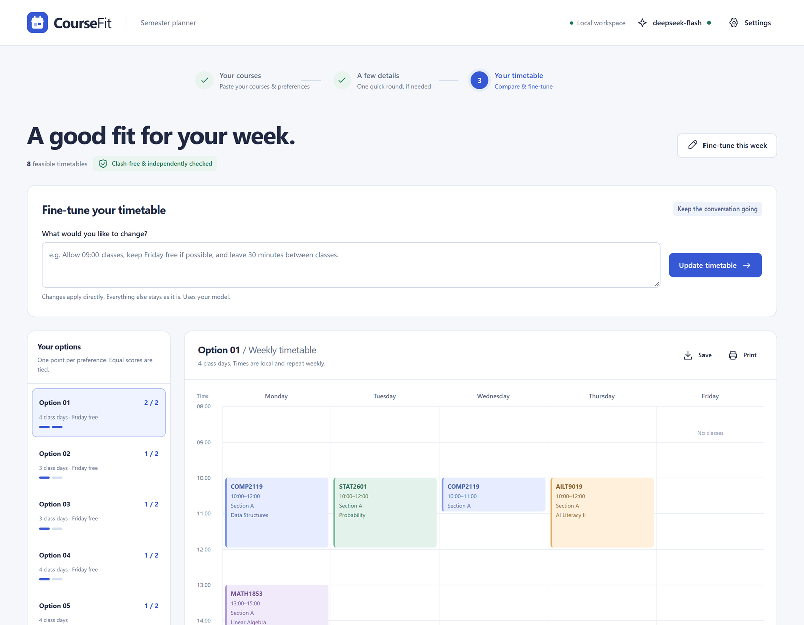
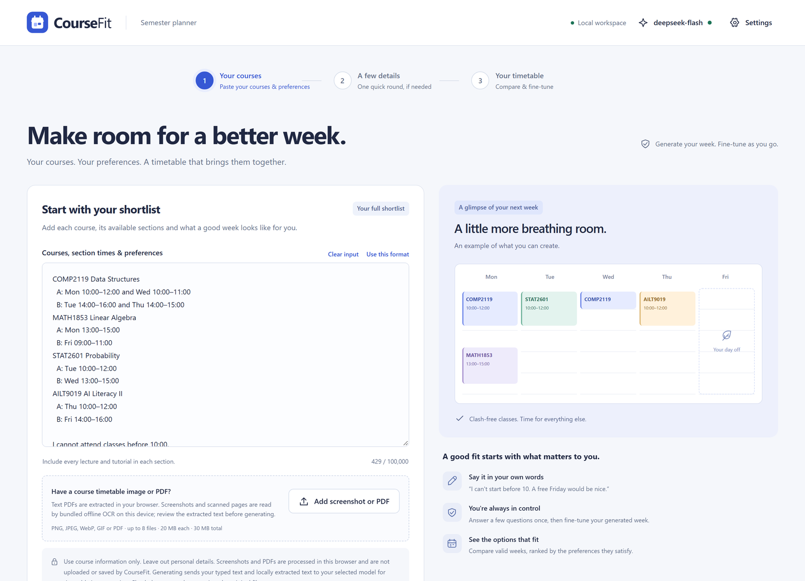
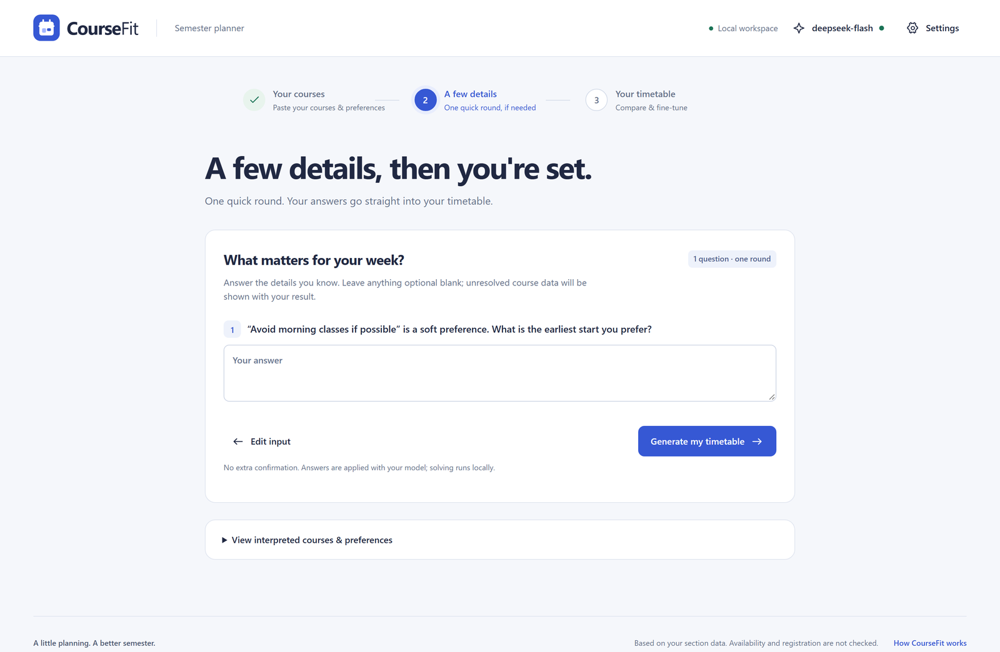
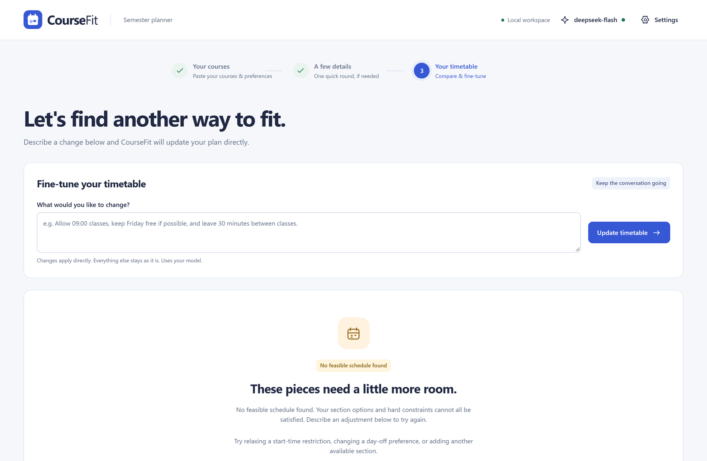

The combinations are invisible
Four courses with two section options each make sixteen combinations before any preference is applied. Real shortlists are larger, and the feasible set is not obvious from a grid of times.
AILT9019 · Group project
CourseFit turns a course shortlist and plain-English preferences into ranked, clash-free weekly timetables — then revises the week when you change your mind.

01 — The problem
A shortlist of courses, each with a handful of sections, already hides dozens of possible weeks. Add a 10:00 start, a free Friday and a limit on gaps, and the trade-offs stop being visible in a spreadsheet.
Four courses with two section options each make sixteen combinations before any preference is applied. Real shortlists are larger, and the feasible set is not obvious from a grid of times.
A later start, a free Friday and short gaps cannot always all hold. Students need to see which weeks satisfy which preferences — not guess at a compromise.
A language model can describe a week that double-books you on Wednesday. A timetable needs proof: an independent overlap check against every hard rule.
CourseFit splits the job: a model reads language, deterministic code decides the timetable.
02 — What it does
Every behaviour below is part of the working prototype — not a roadmap.
Paste a catalogue of courses and sections, then write the rest like a message: “I can’t start before 10, and a Friday off would be nice.” No forms or dropdowns.
Unclear details come back as a single batch of up to five consolidated questions. Answers go straight into generation — no confirmation checkbox, no second round.
A backtracking solver with forward checking searches section bundles under a four-second budget. When the search completes, the feasible count is exact.
Hard must-haves eliminate weeks outright. Every soft preference a week satisfies earns one point; ties are broken deterministically by course and section.
Every returned timetable is re-checked by a separate validator that resolves sections, compares arrival and departure times, and re-evaluates every hard rule.
Fine-tune in ordinary language: “Allow 09:00 classes, keep Friday free.” The current plan is the source of truth, so unaffected courses stay put.
Also included: up to eight PDFs or screenshots per input, with PDF text extraction and OCR running on your device; catalogue placeholders for online classes; and no course, section or meeting caps.
03 — How it works
Four steps, one optional question round, and a plan you can keep editing in your own words.
Course codes, section bundles and meeting times — then preferences as sentences, not settings.
The model returns structured JSON with a short evidence quote for every course, section and rule. Quotes are matched back to your text; changed numbers are rejected.
Section bundles become a constraint problem. Feasible weeks are scored one point per soft preference, and up to twenty are shown.
Describe a change. Superseded rules are replaced, everything unaffected is kept, and the updated week is validated again.
04 — Inside the app
A quiet workspace with one job: show you the week, the options and the reason each option ranks where it does.

A plain text area with a 100,000-character budget, plus PDF and screenshot import that runs on your device.

Ambiguity is resolved once, in a single focused column. Answers generate the timetable directly; remaining uncertainty becomes a note.

No feasible schedule is reported as exactly that, with an adjustment box — never a fabricated week or a hidden rule violation.
Screenshots come from the running application at 1440 px. The example catalogue is pre-parsed, so generating it needs no API key.
05 — Under the hood
The model is only the parser. Everything that decides a timetable — search, scoring, validation and the exhaustive reference — is deterministic code you can read and test.
Courses, sections and preferences — typed, pasted, or read from a PDF or screenshot on your device.
Your chosen provider returns JSON with evidence quotes, in JSON mode, with a 90-second timeout.
Schema and quote checks against the original text. At most one correction request, then a safe failure.
Up to five consolidated questions, only when essential facts are unclear or missing.
Backtracking over section bundles with minimum-remaining-values ordering and forward checking.
An independent check of overlaps and every hard rule on every returned option.
One point per satisfied soft preference, exact counts, deterministic tie-breaking.
Fine-tuning re-enters at step 02 with the current plan as the source of truth.
06 — Verification
A course project should be honest about what has been measured. Here is the current record.
“Fixed-set model accuracy has not yet been measured. A separately authorised real catalogue regression passed, but it does not establish the proposal’s accuracy targets.”
README · Verification
07 — Privacy & scope
CourseFit runs as a single-user local server. The only outbound traffic is the model call you configure.
.local/ with owner-only permissions, excluded from Git, or kept for the session only.08 — Get started
Node.js 22.13 or later. Install the PDF and OCR dependencies once with npm ci; there is no build step and no database.
npm ci, then npm start127.0.0.1:3000This page is a static overview. The planner is a local Node server, not a hosted demo — nothing is generated on this site.
$ git clone https://github.com/TSXG-25/ailt-project-CourseFit.git
$ cd ailt-project-CourseFit
$ npm ci
$ npm start
CourseFit is ready at http://127.0.0.1:3000No API key needed for the built-in examples. Connect a model in Settings when you want to parse your own catalogue.